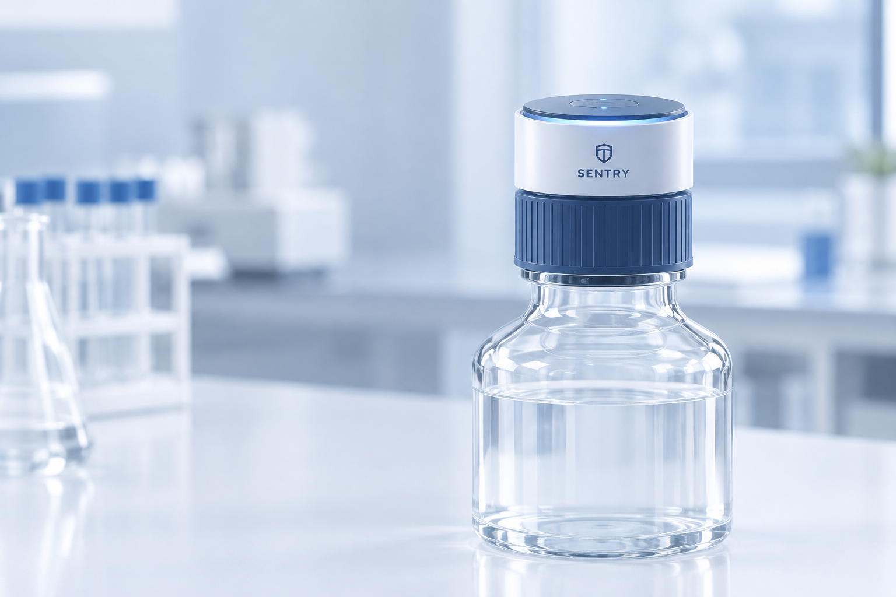

온도 센서
보관 공간의 온도 변화를 확인합니다. 시약별 허용 범위는 제품 라벨과 SDS를 기준으로 설정해야 합니다.
기본 센서 · 온도 모니터링SMART REAGENT MONITORING
시약별 보관 조건과 센서 정보를 한곳에서 확인하고, 필요한 관리 항목을 놓치지 않도록 도와줍니다.

SENSOR GUIDE
기본 센서와 시약 특성에 따라 검토할 수 있는 선택형 센서를 구분합니다.
보관 공간의 온도 변화를 확인합니다. 시약별 허용 범위는 제품 라벨과 SDS를 기준으로 설정해야 합니다.
기본 센서 · 온도 모니터링보관 공간의 상대습도 변화를 확인합니다. 습기에 민감한 물질은 제품별 보관 기준을 별도로 확인합니다.
기본 센서 · 습도 모니터링용기 개폐 이벤트를 기록하는 개념입니다. 실제 기록은 센서 하드웨어가 연결되어야 가능합니다.
기본 센서 · 개폐 기록빛 노출 또는 특정 기체 감지가 필요한 경우 후보를 검토합니다. 센서는 대상 물질과 측정 범위의 호환성을 확인한 뒤 선택합니다.
시약별 추천 · 호환성 확인 필요